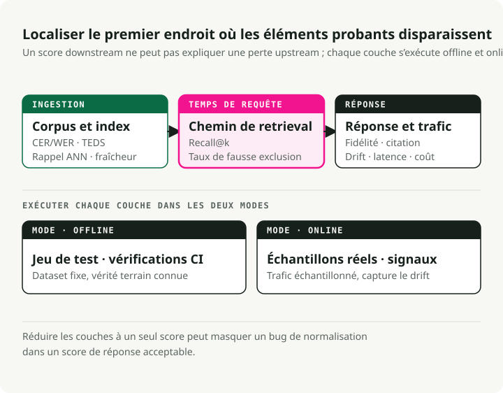
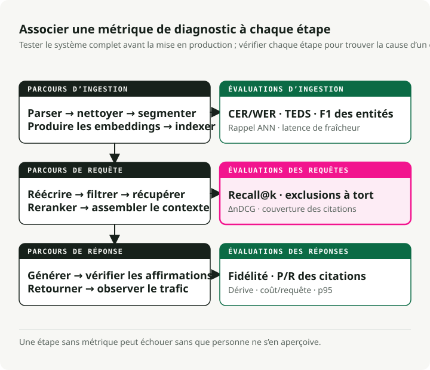
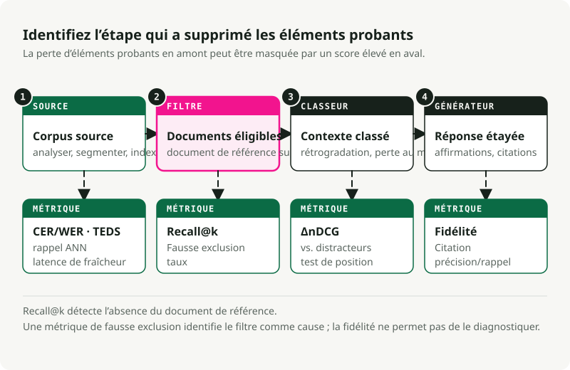

Traduction automatique
Cet article a été traduit automatiquement depuis la version originale en anglais.
Évaluation des systèmes RAG : indicateurs pour chaque étape d’un système RAG en production
Première partie de la série sur les systèmes RAG en production
Un système RAG présentant des filtres défectueux peut fonctionner pendant des mois sans que quiconque ne s’en aperçoive. Le pipeline fournit des réponses, les tableaux de bord de latence restent verts, et le seul signe qu’il y a un problème est que les réponses elles-mêmes sont légèrement erronées. Un défaut « subtil » ne pousse personne à intervenir.
De meilleurs journaux de logs ne permettront pas de détecter cela. L’évaluation, en revanche, le pourra, mais uniquement si elle couvre chaque étape du pipeline avec ses propres indicateurs. Cet article constitue la référence que j’aurais aimé avoir lorsque je cherchais à déterminer quels indicateurs étaient vraiment importants.
!!! astuce « Voulez-vous sauter directement à l’exécution du code ? »
J’ai regroupé les métriques présentées dans cet article dans un repository complémentaire exécutable : [`slavadubrov/rag-evals-demo`](https://github.com/slavadubrov/rag-evals-demo). `make eval` exécute l’ensemble complet des métriques — indicateurs de récupération, approche hybride + RRF, amélioration apportée par le reranker, suppression des faux exclusions, fidélité, cas de données perdues en cours de traitement, utilisation du LLM en tant que juge avec atténuation des biais, latence — sur le corpus SciFact. `make benchmark` Effectue le découpage par tranches, l’incorporation des données et l’utilisation du LLM, puis génère un rapport en Markdown. Les notebooks 00 à 09 analysent chaque métrique séparément ; vocabulaire identique à celui de cet article, valeurs numériques réelles, sans utilisation de Docker (Qdrant intégré).
TL;DR
- L’évaluation définit le système. Une étape dépourvue de métrique est une étape qui échoue en silence.
-
Une pile d’évaluation utile couvre l’ingestion, la récupération, le ancrage de la génération, la conformité avec l’ontologie ainsi que les signaux du système. RAGAS, TruLens, DeepEval, Arize Phoenix, et le TREC 2024 – Catégorie RAG Vous fourniront des outils adaptés. Cependant, ils ne choisissent pas à votre place les métriques à utiliser.
-
Dans le cas d’un RAG basé sur des métadonnées et des ontologies, l’échec le plus fréquent est le filtre silencieux : une étiquette incorrecte ou un prédicat trop rigide réduisent la capacité de rappel à zéro. La fiabilité peut toutefois sembler bonne, car le modèle indique fidèlement « Je ne sais pas ».
Les analyses approfondies portent sur chaque section individuellement. Utilisez celle-ci comme index.
Tableau de décision pour l’évaluation du RAG
Utilisez ce tableau comme point de départ avant de choisir un cadre de travail. La métrique appropriée dépend du mode d’échec que vous souhaitez détecter, et non du nom de l’outil.
| Question | Famille de métriques | Utilisez ceci lorsque | Faites attention à |
|---|---|---|---|
| La analyse a-t-elle conservé le texte source ? | Complétude de l’extraction, couverture des tableaux et figures | Les PDF, diapositives, scans et pages HTML sont intégrés au corpus. | Un texte au rendu soigné peut tout de même présenter des légendes manquantes, des notes de bas de page ou une structure de tableau incorrecte. |
| La récupération a-t-elle trouvé les preuves appropriées ? | Recall@k, nDCG@k, MRR, précision/recall dans le contexte | Vous pouvez étiqueter les blocs ou documents pertinents | Un filtre métadonnées strict peut supprimer le document adéquat avant même que le classement ne commence. |
| Le réclassement a-t-il amélioré la liste restreinte ? | Amélioration du reranking, Précision@1, delta nDCG | Les encodeurs croisés ou les classeurs de modèles de langage large se situent après l’étape de récupération. | Mesurer la latence et les coûts grâce à l’amélioration de la qualité |
| La réponse s’est-elle appuyée sur les preuves ? | Fidélité, ancrage factuel, prise en charge des citations | La réponse cite des documents ou affirme des faits à partir du contexte. | La fidélité ne permet pas de diagnostiquer une analyse incorrecte ou un chargement défectueux. |
| Le système est-il stable en production ? | Dérive, régénération, mode de secours, latence p95, coût par réponse | Changements de trafic après le lancement | La télémétrie de production nécessite une révision humaine échantillonnée afin de rester calibrée |
Pour une comparaison plus concise des outils, consultez Meilleurs outils et métriques d’évaluation pour les systèmes RAG en 2026## Partie 1 — Pourquoi évaluer en premier
Le signal clé
Dans un projet RAG, le diagramme d’architecture ne doit pas être le premier artefact à être créé. C’est l’ensemble d’évaluation qui doit l’être.
Vous ne pouvez pas choisir entre BM25 et la récupération dense, entre le découpage récursif et celui sémantique, ou encore entre Cohere Rerank et BGE tant que vous ne savez pas ce que vous optimisez. « Des réponses meilleures » n’est pas une métrique. En revanche, « une fidélité ≥ 0,85 sur un ensemble de référence de 200 requêtes couvrant nos trois intentions principales, avec une latence p95 < 1,5 s et un taux d’exclusion erronée des filtres < 2 % » constitue bien une métrique.
Définissez le cadre d’évaluation avant d’écrire le code de récupération des données. Le premier cadre sera imparfait, et vous devrez le modifier. Modifier une métrique est bien moins coûteux que de devoir revoir un système déjà déployé.
Trois niveaux, pas un seul chiffre
Le RAG moderne fonctionne comme un pipeline, il faut donc que l’évaluation suive le même principe. Aucun chiffre unique ne permet de détecter tous les types de défaillances.
L’évaluation en production comporte trois niveaux : hors ligne (la base de connaissances a-t-elle été préparée correctement ?), en ligne (les preuves appropriées ont-elles été trouvées et utilisées pour cette requête ?) et post-génération (la réponse est-elle fiable et vérifiable ?). Chaque niveau pose une question différente. Si vous les fusionnez en un seul score, vous risquez de manquer des défaillances fondamentales, comme une erreur de normalisation qui nuit gravement au taux de rappel.

La même distinction permet de distinguer l’évaluation en ligne de celle hors ligne. L’évaluation hors ligne s’effectue sur un ensemble de données fixe dont les valeurs de référence sont connues. Elle est reproductible, peu coûteuse en termes d’itérations, et constitue le cadre idéal pour la sélection des composants, les comparaisons A/B ainsi que les contrôles intégration. L’évaluation en ligne, quant à elle, se déroule sur du trafic réel. Elle permet de détecter des signaux impossibles à simuler hors ligne : le taux de régénération, le temps d’affichage, les interactions utilisateur et les écarts réels dans les requêtes. Cependant, ce type d’évaluation est bruyant et plus difficile à instrumenter correctement.
Vous avez besoin des deux approches. Une évaluation uniquement hors ligne manque les écarts liés au trafic réel. Une évaluation uniquement en ligne rend difficile la reproductibilité des dégradations du système. Mener les deux types d’évaluations demande plus de travail, mais c’est la seule méthode qui vous fournisse des retours utiles avant et après le lancement.
Au niveau des composants versus du système global
Deux erreurs courantes existent. Une évaluation uniquement au niveau du système global indique simplement que le système est défaillant, sans préciser où. Une évaluation uniquement au niveau des composants peut montrer que chaque partie fonctionne correctement alors que le système dans son ensemble échoue encore. La solution consiste à utiliser quelques métriques clés au niveau du système global pour prendre des décisions de validation ou non, complétées par des métriques par composant aux fins de diagnostic. Les métriques de récupération permettent de détecter les dégradations du module de récupération des données, tandis que les métriques de génération permettent de détecter celles du module de génération. La correction des réponses au niveau du système global, quant à elle, permet de repérer les échecs d’intégration.
Les frameworks de référence (tour guidé)
| Framework | Meilleur pour | Là où cela échoue |
|---|---|---|
| RAGAS | Métriques RAG sans référence (fidélité, pertinence de la réponse, précision/recouvrement du contexte) ; le vocabulaire de fait | Coût du juge LLM ; composantes de score opaques lors du débogage ; paramètres par défaut axés sur l’anglais |
| ARES | Le classifieur entraîné évalue chaque pipeline ; il nécessite moins d’annotations que les approches de type RAGAS ; il offre une précision élevée pour les systèmes similaires. | Configuration plus lourde ; il est nécessaire d’entraîner réellement des modèles |
| TruLens | Fonctions de retour d’information composables offrant une forte capacité d’explicabilité ; traces OpenTelemetry ; adaptées à l’environnement de production | Moins de batteries incluses dans les métriques spécifiques à RAG par rapport à RAGAS. |
| DeepEval | Tests unitaires de style Pytest pour les sorties des LLM ; G-Eval, métriques personnalisées, compatibles avec les pipelines CI/CD | Une utilisation intensive du juge LLM = pics de coûts |
| Arize Phoenix | Visualisation avancée du suivi et de l’incorporation ; permet d’identifier visuellement les déviations des embeddings ; natif OTEL | Vous apportez vos propres définitions de métriques |
| Track RAG de TREC 2024 | Benchmark public pour l’évaluation des extraits (AutoNuggetizer), le suivi de l’évaluation et la fluidité sur MS MARCO Segment v2.1 | Ce n’est pas un outil en temps de exécution, mais plutôt une référence de benchmark pour effectuer des calibrations. |
Ma stack par défaut comprend RAGAS pour le vocabulaire des métriques, DeepEval pour les contrôles d’intégration continue, Phoenix pour le traçage en production, ainsi que du code personnalisé pour les métriques spécifiques à l’ontologie. Vous finirez inévitablement par avoir besoin de plus que ce avec quoi vous commencez. Choisissez donc le framework qui facilite la création de métriques personnalisées.
Pour les benchmarks, utilisez BEIR (Thakur et al., NeurIPS 2021) pour la généralisation de la récupération sans exemple. MTEB pour la qualité générale des embeddings, MIRACL pour la récupération multilingue, et le TREC 2024 – Catégorie RAG pour l’évaluation bout en bout du RAG.
Partie 2 — Le pipeline avec des points d’évaluation
Un système RAG en production est bien plus complexe que simplement « incruster les documents, récupérer des fragments, appeler un LLM ». Chaque étape entre l’acquisition des documents et la livraison de la réponse peut échouer.

Chaque étape du diagramme dispose d’au moins une métrique. Une étape ne possédant aucune métrique peut échouer sans que personne ne s’en aperçoive.
Les trois flux correspondent aux étapes où surviennent les défaillances. Le flux hors ligne couvre tout ce qui se produit avant l’arrivée d’une requête : le parsing, le nettoyage, le découpage en chunks, la génération d’embeddings et l’indexation. Le flux en ligne couvre tout ce qui se passe après l’arrivée d’une requête : la réécriture, la récupération des résultats, le reclassement et l’assemblage du contexte. Le flux post-génération couvre les vérifications effectuées après que le modèle a généré une réponse : la fidélité au sujet, la vérification des citations, les signaux de dérive et les données telemétriques en environnement de production.
Les erreurs s’accumulent le long de la chaîne. Un parsing incorrect limite le découpage en chunks. Un mauvais découpage limite la récupération des résultats. Une mauvaise récupération limite le reclassement. Un mauvais reclassement limite la génération de la réponse. La mesure de la fidélité ne prend en compte que la réponse finale, jamais les causes antérieures.
Partie 3 — Évaluation de l’ingestion hors ligne
De nombreux échecs liés aux systèmes RAG en production commencent lors de l’ingestion des données. Le système fonctionne correctement avec des documents de test propres, mais échoue ensuite avec des PDF réels, des scans, des tableaux ainsi que des pages de corpus peu structurées.
Acquisition et parsing des documents
Indicateurs à mesurer :
- Complétude de l’extraction de texte :
extracted_chars / expected_charssur un échantillon étiqueté, calculé par classe de document. Il n’existe pas de package canonique — écrivez un petit outil d’accompagnement qui compare la sortie du parseur à une référence nettoyée manuellement. Faites attention aux notes de bas de page, en-têtes et légendes manquantes. -
Précision OCR : CER (taux d’erreur de caractère) et WER (taux d’erreur de mot), les métriques standards pour le traitement du langage parlé/OCR :
\[ \text{CER} = \frac{S + D + I}{N}, \qquad \text{WER} = \frac{S_w + D_w + I_w}{N_w} \]où \(S\), \(D\), \(I\) représentent respectivement les substitutions, suppressions et insertions au niveau des caractères, et \(N\) est le nombre de caractères de référence (sous-indice \(w\) pour la version par mot). Un taux CER de 1–2 % est acceptable pour le texte imprimé ; un taux supérieur à 10 % rend le texte inutilisable. Pour les documents manuscrits ou multilingues, un taux de ≤20 % peut encore être tolérable. Calculez avec
jiwer(jiwer.cer(refs, hyps),jiwer.wer(refs, hyps)) ou HuggingFaceevaluate. Pour les corpus d’évaluation, FUNSD et Serrage Ce sont les benchmarks publics.from jiwer import cer, wer refs = ["Mars has two moons, Phobos and Deimos."] hyps = ["Mars has two m00ns, Phobos and Deirnos."] print(f"CER = {cer(refs, hyps):.3f}") # CER = 0.077 print(f"WER = {wer(refs, hyps):.3f}") # WER = 0.286 -
Fidélité de l’extraction de tableaux : TEDS (Similarité basée sur la distance d’édition d’arbres) mesure dans quelle mesure l’arbre de tableau HTML prédit est proche de celui de référence, normalisé en fonction de la taille de l’arbre le plus grand. Zhong et al., 2020 (PubTabNet) :
\[ \text{TEDS}(T_a, T_b) = 1 - \frac{\text{EditDist}(T_a, T_b)}{\max(|T_a|, |T_b|)} \]TEDS fait appel à la fois à la structure (lignes, colonnes, espacements) et au contenu des cellules ; TEDS-S élimine le contenu pour ne considérer que la structure. Implémentation de référence : PubTabNet’s
teds.py(utiliseapteden interne). Pour les corpus d’évaluation, voir PubTabNet. FinTabNet, ainsi que SciTSR. Les analyseurs naïfs échouent souvent avec les tableaux ; effectuez des tests de référence avant de vous en fier à eux. -
Préservation du layout/structure : ordre des titres, intégrité des listes, ordre de lecture dans les PDF à plusieurs colonnes. Utiliser DocLayNet pour un benchmark étiqueté ; pour une comparaison avec des analyseurs prêts à l’emploi,
unstructured,pymupdf, ainsi qu’un analyseur de VLM commedoclingcouvrir la majeure partie de l’espace de conception.
Mon avis : évaluez trois analyseurs de texte (une référence Tesseract, un modèle VLM-OCR, ainsi que le candidat fourni par votre fournisseur) sur un échantillon stratifié de types de documents réels (scans nets, photos, pages riches en tableaux, documents multilingues, contenant de la mathématique ou de l’écriture manuscrite), à une résolution DPI fixe. Rapportez le CER/WER pour chaque type de document, ainsi que les TEDS pour les pages contenant des tableaux. Sans cela, vous ne faites que spéculer.
Nettoyage et normalisation
- Précision de suppression des éléments génériques : précision/rappel par rapport aux segments d’éléments génériques étiquetés manuellement. Une suppression trop agressive détruit du contenu pertinent ; une suppression trop lente contamine les embeddings. Outils de comparaison :
trafilatura,jusText,Resiliparse. Barbaresi (2021) Comparer ces solutions en conditions réelles. - Normalisation Unicode : pourcentage de documents générant des sorties NFC et NFKC identiques (calculé à l’aide de la bibliothèque standard).
unicodedata.normalize) constitue un signal utile pour détecter la dérive. Ce sont les incohérences causées par les caractères de jonction à largeur nulle et les caractères similaires qui entraînent une baisse du taux de rappel dans les opérations de récupération. - Précision de la détection de langue : score F1 sur un échantillon multilingue étiqueté. Essentielle pour les index multilingues. Utiliser
fasttext-langdetect(Facebook’slid.176),lingua-py, oucld3; FLORES-200 constitue la référence standard pour les langues à faibles ressources. -
Efficacité de la déduplication (MinHash / LSH) : précision/rappel de votre détecteur de quasi-dupliques par rapport à un ensemble étiqueté manuellement. Idée de base : estimer la similarité de Jaccard \(J(A, B) = \frac\)|A ∩ B|}{|A ∪ B|\(}\) entre les ensembles de fichiers du document via \(k\) hachages de permutations aléatoires (Broder, 1997) et regrouper les quasi-duplicatas grâce à la bandage LSH (Indyk et Motwani, 1998). Le MinHash standard, utilisant 128 fonctions de hachage et une méthode de banding LSH réglée sur un seuil de Jaccard compris entre 0,7 et 0,85, constitue la valeur par défaut ; effectuez des tests sur vos données, car le seuil optimal dépend du corpus. Suivez séparément le taux de fusions fausses (qui corrompt les réponses) et le taux de fusions manquées (qui gaspille de l’espace d’indexation).
datasketchc’est le paquet Python canonique :from datasketch import MinHash, MinHashLSH def shingles(text: str, k: int = 5) -> set[str]: text = text.lower() return {text[i:i + k] for i in range(len(text) - k + 1)} def to_minhash(text: str, num_perm: int = 128) -> MinHash: m = MinHash(num_perm=num_perm) for s in shingles(text): m.update(s.encode("utf-8")) return m docs = { "d1": "Mars has two moons, Phobos and Deimos.", "d2": "Mars has two moons, Phobos and Deimos!", # near-dup "d3": "Curiosity rover landed on Mars in 2012.", } lsh = MinHashLSH(threshold=0.8, num_perm=128) for did, text in docs.items(): lsh.insert(did, to_minhash(text)) print(lsh.query(to_minhash(docs["d1"]))) # ['d1', 'd2'] -
Nettoyage des PII : précision et rappel, calculés séparément pour chaque type d’entité (adresses e-mail, numéros de sécurité sociale, noms, adresses). Les erreurs de rappel créent des risques en matière de conformité ; les erreurs de précision affectent la qualité des réponses. Définissez le point de fonctionnement en collaboration avec l’équipe juridique. Outils : Microsoft Presidio (le plus complet)
scrubadub, ou un modèle NER affiné sur un ensemble étiqueté.
Le chunking — l’étape qui décide discrètement du processus de récupération
Le découpage en chunks constitue l’une des décisions les plus influentes dans le cadre du RAG. Une stratégie inadaptée peut entraîner un écart important dans les taux de rappel, même avec les mêmes embeddings. Les benchmarks NVIDIA de 2024 a donné au découpage au niveau de la page la plus haute précision ainsi que la plus faible variance pour les documents paginés ; le découpage sémantique (regroupement des phrases adjacentes en fonction de la similarité des embeddings et segmentation aux frontières dissimilaires — mis en œuvre dans de LangChain SemanticChunker et LlamaIndex’s SemanticSplitterNodeParser) peut améliorer le taux de rappel par rapport au découpage en fenêtres fixes ; la segmentation récursive des caractères (tenter d’abord les sauts de paragraphe, puis les sauts de phrase, ensuite les sauts de mot, jusqu’à ce que chaque morceau corresponde à la taille cible — voir de LangChain RecursiveCharacterTextSplitter) avec 400 à 512 tokens et un taux d’overlap de 10 à 20 % reste une bonne valeur par défaut pour le texte général.
Indicateurs à suivre :
- Coérence des blocs : \(\text{coherence} = \overline{\cos(s_i, s_j)}_{\text{intérieur}} - \overline{\cos(s_i, s_j)}_{\text{à la frontière}}\), où \(s_i\) représentent les embeddings de phrase. Les blocs sains présentent une similitude interne élevée et une dissimilitude importante à leurs frontières. Calculer avec
sentence-transformersde plusscikit-learn'scosine_similarity. - Qualité des limites : étiquetage manuel indiquant « s’agit-il d’une coupure pertinente ? » pour chaque échantillon, complété par une vérification structurelle afin de s’assurer que les segments ne divisent pas de tableaux, de listes ou de sections numérotées (ce qui constitue l’erreur la plus fréquente en environnement de production).
- Taille optimale des segments : tester différentes tailles de tokens (128, 256, 512, 1024) et tracer le graphique Recall@k en fonction de la taille sur l’ensemble de référence. Choisir le point de transition optimal ; ne pas suivre simplement les recommandations des tutoriels.
- Efficacité de l’overlap : varier le taux d’overlap (0 %, 10 %, 20 %, 30 %) et mesurer le Recall@k correspondant. Dans la plupart des corpus, les gains deviennent négligeables au-delà d’environ 20 %.
- Fidélité de l’attribution des segments : pourcentage de segments conservant un indicateur de source vérifiable (numéro de page, ancre de section, ID de document). Cela est indispensable pour assurer la traçabilité.
- Chunking tardif vs. précoce : Chunkage tardif (Günther et al., 2024) incorpore l’ensemble du document avant de le segmenter, ce qui permet de préserver le contexte global (implémentation de référence dans
jina-embeddings-v3). Recherche contextuelle (Anthropic, 2024) ajoute en préfixe le contexte généré par le LLM à chaque chunk. Cela entraîne des coûts supplémentaires dans les deux cas. Effectuez des tests sur votre corpus avant d’adopter l’une ou l’autre approche.
Selon moi : le découpage structuré (basé sur les titres, les tableaux et les sections — mis en œuvre par des analyseurs tels que) unstructured.io ou en parcourant l’AST déjà généré par votre analyseur) est sous-utilisé. Si vos documents présentent une structure, utilisez-la avant d’ajouter des heuristiques de similarité. La segmentation récursive des caractères constitue la méthode de référence ; le chunking sémantique justifie les surcoûts principalement pour le texte non structuré.
Extraction et enrichissement des métadonnées
- Précision/représentativité/F1 du NER : par type d’entité, sur un sous-ensemble étiqueté. Style CoNLL/MUC standard. Calculer avec
seqeval(from seqeval.metrics import f1_score) pour la version prenant en compte les étiquettes BIO/IOB, ou scikit-learn pour les comparaisons de ensembles de spans. CoNLL-2003 et OntoNotes 5.0 constituent les corpus de référence canoniques. - F1 de l’extraction de relations : encore plus crucial pour les systèmes basés sur des ontologies. Étiquetez manuellement 200 documents. TACRED et DocRED constituent les benchmarks publics ; en ce qui concerne le code en production,
opennreetspaCyLes pipelines de relations constituent des points de départ pertinents. - Précision de l’extraction du titre/intitulé : correspondance exacte associée à une similarité de Levenshtein normalisée (\(1 - \frac{\text{edit\_dist}(a, b)}{\max(|a|, |b|)}\)) par rapport aux valeurs de référence —
python-LevenshteinourapidfuzzJe vous les fournirai tous les deux en une seule requête. - Préservation des métadonnées hiérarchiques : pourcentage de blocs qui conservent correctement leur section parente, leur document parent et leur chemin d’ascendance. C’est ce métrique qui détermine si votre RAG est capable de répondre à des questions du type « Qu’est-ce que le enfant de la politique X dit ? ».
Génération des embeddings
- Étalons de sélection des modèles : MTEB pour les capacités générales (le nDCG@10 est l’indicateur principal ; le Paquet Python MTEB permet de reproduire le classement localement), BEIR pour la généralisation sans exemple. MIRACL Pour les applications multilingues, les meilleurs modèles de récupération se regroupent dans une bande étroite de nDCG@10, mais les scores MTEB en anglais ne permettent pas de prédire de manière fiable la performance sur les langues à ressources limitées.
- Évaluation spécifique au domaine : ne vous fiez pas aux benchmarks généraux pour les corpus sectoriels. Créez un ensemble de référence dédié comprenant 200 à 500 paires requête/document et réclassifiez les modèles candidats à l’aide de cet ensemble.
ranxoupytrec_eval. J’ai observé à plusieurs reprises un modèle classé n°5 sur le MTEB battre un modèle classé n°1 de plus de 15 points dans un domaine spécifique. - Détection de la dérive des embeddings : suivre la dérive distributive mesurée par le KL ou basée sur le modèle entre une fenêtre de référence fixe et les embeddings produits en temps réel ; la stabilité par voisinage le plus proche pour un ensemble d’échantillons de test fixe constitue le signal pratique le plus simple.
evidentlyetalibi-detectTous deux intègrent des détecteurs de dérive basés sur des modèles ainsi que des détecteurs statistiques. Evidently's étude comparative Préfère la détection de dérive basée sur des modèles en tant que valeur par défaut. - Multi-vector vs. single-vector : interaction tardive (ColBERT / ColBERTv2 — voir Khattab et Zaharia, 2020; implémentations de référence dans RAGatouille et PyLate) gagne généralement en dehors du domaine à un coût de stockage 6 à 10 fois supérieur (grâce à une compression de type PLAID ; le format non compressé est bien plus volumineux). Cela en vaut la peine lorsque votre corpus est éloigné de la distribution d’entraînement du modèle d’embedding. Sinon, privilégiez le vecteur unique.
Construction de l’index
- Recall@k sous approximation : comparer l’index de voisin le plus proche approximatif (ANN) à une référence par force brute exacte pour le même k — en FAISS, c’est bien ça.
IndexHNSWFlat(ouIndexIVFFlat) contreIndexFlatIP/IndexFlatL2. Visez un taux de rappel d’au moins 95 % à 10 échantillons par rapport à une valeur plate.ann-benchmarksLe projet suit les courbes Pareto du taux de rappel et du QPS au sein des bibliothèques. - Ajustement de HNSW : HNSW (Hierarchical Navigable Small World — un graphe de proximité hiérarchisé ; voir Malkov et Yashunin, 2018, implémenté en
hnswlib, FAISS’sIndexHNSWFlat, et la plupart des bases de données vectorielles) exposent trois paramètres de réglage :M(graphique à diffusion)efConstruction(Largeur candidate en temps de compilation),efSearch(largeur du candidat en temps de requête). Valeurs par défaut pragmatiques : M=16–32, efConstruction=150, efSearch commençant à 100 et ajusté à la hausse jusqu’à ce que le taux de rappel atteigne un plateau. Un ensemble de données de 10M de vecteurs avec efSearch=500 peut atteindre un taux de rappel de 98 % en 5 ms ; avec efSearch=100, ce taux descend à 85 % en 1 ms. Choisissez le niveau de rappel requis par votre ensemble d’évaluation. - Ajustement IVF : IVF (index de fichiers inversé — vectorisation des partitions à l’aide de k-means)
nlistles cellules, puis effectuer un balayage au moment de la requêtenprobecellules les plus proches ; voir FAISS’sIndexIVFFlatetIndexIVFPQ). Utiliseznlist≈ √N comme heuristique de départ et l’ajusternprobeen temps de exécution. IVF gère généralement les recherches filtrées de manière plus efficace que HNSW, ce qui est crucial pour les systèmes basés sur des ontologies contenant de nombreux prédicats de métadonnées. - Retard de fraîcheur des mises à jour : délai entre la sauvegarde d’un document et sa disponibilité pour la récupération. Suivez les valeurs p50 et p99. Pour les systèmes soumis à des exigences réglementaires, suivez également le pourcentage de requêtes traitées à l’aide d’index obsolètes.
Partie 4 — Évaluation de l’inférence en ligne
C’est dans cette catégorie qu’apparaissent la plupart des métriques de production. De nombreuses équipes se contentent du taux de rappel @k. Cela ne suffit pas.
Compréhension et réécriture des requêtes
- Qualité d’expansion des requêtes : amélioration du Recall@k sur votre ensemble de référence, entre requête étendue et requête brute. Si cette amélioration n’est pas d’au moins +5 % pour les requêtes difficiles, votre outil d’expansion nuit plus qu’il ne contribue. Les référentiels classiques de PRF (pseudo-relevance feedback) tels que RM3 et Bo1 Ce sont toujours des vérifications de fiabilité utiles ; l’expansion basée sur des LLM doit les surpasser.
- Évaluation HyDE : HyDE (Gao et al., 2022) génère une réponse hypothétique à l’aide du LLM, l’incorpore dans le vecteur d’embedding, puis effectue une recherche en se basant sur celui-ci — il s’agit d’un outil utile qui introduit toutefois un délai supplémentaire ainsi qu’un risque accru de hallucinations. Évaluer son efficacité en mesurant l’amélioration du Recall@10 sur les requêtes hors domaine (où il se montre particulièrement performant), et s’assurer qu’il n’y a pas de dégradation des résultats sur les requêtes en domaine (où il peut nuire). L’utiliser uniquement en tant que solution de secours lorsque la confiance de la recherche est faible, et non comme méthode par défaut. Fournir un reranker basé sur un cross-encoder en amont pour valider les résultats obtenus grâce à ces réponses hypothétiques.
- Génération de multiples requêtes : union Recall@k de N réécritures par rapport à une seule requête. Retour sur investissement qui diminue après 3 à 4 réécritures. Implémentations : LangChain’s
MultiQueryRetriever, celui de LlamaIndexQueryFusionRetriever. - Précision de classification des intentions : précision/recall/F1 standard par intention (calculer avec
sklearn.metrics.classification_report), mais la métrique clé est la correctitude du routage — le pipeline cible approprié est-il bien invoqué ? - Routage adaptatif : Adaptive-RAG (Jeong et al., NAACL 2024) démontrent que toutes les requêtes ne méritent pas la même stratégie de récupération. Traitez la précision du routage des traces comme un problème de classification en utilisant un ensemble étiqueté comprenant les catégories « aucune récupération nécessaire / une seule tentative / itératif ».
Métriques de récupération
Il s’agit des métriques de référence. Si vous ne les suivez pas, vous ne pourrez pas déterminer si les performances de récupération s’améliorent.
| Métrique | Ce qu’il mesure | Quand l’utiliser |
|---|---|---|
| Recall@k | Pourcentage de requêtes pour lesquelles un document pertinent se trouve parmi les k premiers | La métrique de récupération la plus importante pour RAG ; si elle est faible, rien dans les étapes suivantes n’a d’importance. |
| Précision@k | Pourcentage de top-k qui sont pertinents | utile lorsque la fenêtre de contexte constitue le goulot d’étranglement |
| MRR | moyenne de 1/rang du premier document pertinent | lorsque les utilisateurs ne consultent que les résultats du top-1 ou du top-3 |
| nDCG@k | gain pondéré par la perte de position et par les niveaux de pertinence | métrique de récupération standard pour l’adéquation graduée |
| MAP | moyenne sur les requêtes de précision moyenne | lorsque l’on se soucie de toute la liste classée |
| Taux de réussite@k | version binaire de Recall@k | métrique de vérification rapide |
| Couverture | pourcentage de documents « gold » jamais récupérés au cours de toutes les requêtes | détecte les lacunes systématiques dans l’index |
Les formules, à titre de référence (pertinence binaire avec l’ensemble pertinent \(R_q\) pour la requête \(q\), et \(\text{rel}_i = 1\) si le \(i\)-ème document récupéré fait partie de \(R_q\)) :
Pour la pertinence pondérée, \(\text{rel}_i \in \{0, 1, 2, \dots\}\) ; le nDCG binaire constitue le cas particulier utilisé dans le code ci-dessous. MAP représente la moyenne, parmi toutes les requêtes, de \(\text{AP}_q = \frac{1}{|R_q|}\sum_{i: \text{rel}_i = 1} \text{Precision@}i\). Voir Manning, Raghavan, Schütze, Introduction à la récupération d’informations, chapitre 8 pour les dérivationes.
Pour le code en production, utilisez ranx, pytrec_eval, ou ir_measures — Ils prennent en charge l’ensemble de la famille de métriques TREC et gèrent correctement la pertinence graduelle. Cibles de départ raisonnables : Recall@10 ≥ 0,85, MRR ≥ 0,6, nDCG@10 ≥ 0,7. Ces valeurs doivent être déterminées à partir d’un ensemble de référence réaliste, et non extraites d’un tutoriel.
Le jeu de tests associé est court. Vous pouvez le lancer depuis un notebook avant même d’avoir choisi une base de données vectorielle.
from math import log2
from statistics import mean
# synthetic gold set: query_id -> set of relevant doc ids
gold = {
"q1": {"d3"},
"q2": {"d7", "d2"},
"q3": {"d11"},
"q4": {"d5"},
}
# ranked retrieval results: query_id -> ranked list of doc ids (top-10)
runs = {
"q1": ["d8", "d3", "d1", "d4", "d2", "d9", "d6", "d10", "d12", "d13"],
"q2": ["d2", "d6", "d4", "d7", "d1", "d3", "d8", "d11", "d5", "d9"],
"q3": ["d11", "d2", "d3", "d4", "d1", "d6", "d7", "d8", "d10", "d12"],
"q4": ["d1", "d2", "d3", "d6", "d8", "d9", "d10", "d12", "d13", "d14"],
}
def recall_at_k(ranked, gold_set, k):
if not gold_set:
return 0.0
hit = sum(1 for d in ranked[:k] if d in gold_set)
return hit / len(gold_set)
def reciprocal_rank(ranked, gold_set):
# MRR contribution per query: 1/rank of the first relevant doc.
for rank, d in enumerate(ranked, start=1):
if d in gold_set:
return 1.0 / rank
return 0.0
def ndcg_at_k(ranked, gold_set, k):
# binary relevance: rel ∈ {0, 1}
gains = [1.0 if d in gold_set else 0.0 for d in ranked[:k]]
dcg = sum(g / log2(i + 2) for i, g in enumerate(gains))
# ideal DCG: all gold docs ranked first, capped by k
n_gold_in_topk = min(k, len(gold_set))
idcg = sum(1.0 / log2(i + 2) for i in range(n_gold_in_topk))
return dcg / idcg if idcg else 0.0
K = 5
print(f"Recall@{K}: {mean(recall_at_k(runs[q], gold[q], K) for q in gold):.3f}")
print(f"MRR: {mean(reciprocal_rank(runs[q], gold[q]) for q in gold):.3f}")
print(f"nDCG@{K}: {mean(ndcg_at_k(runs[q], gold[q], K) for q in gold):.3f}")
# Recall@5: 0.750
# MRR: 0.625
# nDCG@5: 0.627
Ce constitue votre porte de contrôle CI pour la récupération des données. Connectez-la à un ensemble d’entraînement contenant 200 requêtes et exécutez-la sur chaque PR. Si l’un des trois indicateurs montre une dégradation, bloquez la fusion du pull request et corrigez cette dégradation.
Le dépôt associé fixe les valeurs numériques exactes mentionnées ci-dessus.Recall@5 = 0.750, MRR = 0.625, nDCG@5 = 0.627) en tant que test unitaire dans tests/test_retrieval_metrics.py; Notebook 01 effectue des mesures de Recall@k / MRR / nDCG sur un index SciFact réel, et l’outil adapté à l’environnement de production est disponible ici evaluation/retrieval.py### Fusion de la récupération hybride et du rang réciproque
BM25 (le classique évaluateur lexical dispersé issu de Robertson & Walker, 1994 — correspondance de terme exact avec pondération de type TF-IDF et normalisation de la longueur, disponible dans rank_bm25, Elasticsearch/OpenSearch, ainsi que la plupart des moteurs de recherche), en plus d’une fusion dense via Fusion du rang réciproque (Cormack, Clarke, Buettcher, SIGIR 2009) avec k=60 constitue une valeur par défaut fiable. RRF étant indépendant des scores, il évite les problèmes de normalisation des scores liés à l’interpolation linéaire. Si vous disposez de 50 paires de requêtes étiquetées ou plus, essayez une combinaison convexe et ajustez la valeur de α. Une approche hybride associée à un réordonneur à codage croisé surpasse généralement les méthodes de récupération basées uniquement sur des données denses ou sparses dans les corpus techniques, de type journal ou de code. Sur des corpus fortement sémantiques, les gains peuvent être limités. Mesurez les performances sur vos propres données : une configuration de fusion inadaptée peut même entraîner de résultats inférieurs à ceux obtenus avec des données denses uniquement.
Sa mise en œuvre ne nécessite que quelques lignes de code.
from collections import defaultdict
# two retrieval lanes: dense embeddings and BM25.
dense = ["d3", "d7", "d1", "d4", "d2", "d9", "d10"]
sparse = ["d2", "d3", "d8", "d1", "d11", "d4", "d6"]
def rrf(rankings: list[list[str]], k: int = 60) -> list[tuple[str, float]]:
"""Reciprocal Rank Fusion (Cormack et al., SIGIR 2009).
score(d) = sum over rankings of 1 / (k + rank(d))
Score-agnostic: only rank position matters. k=60 is the canonical default.
"""
scores: dict[str, float] = defaultdict(float)
for ranking in rankings:
for rank, doc in enumerate(ranking, start=1):
scores[doc] += 1.0 / (k + rank)
return sorted(scores.items(), key=lambda kv: kv[1], reverse=True)
fused = rrf([dense, sparse], k=60)
for doc, score in fused[:5]:
print(f"{doc} score={score:.5f}")
# d3 score=0.03252 <- rank 1 dense, rank 2 sparse
# d2 score=0.03178 <- rank 5 dense, rank 1 sparse
# d1 score=0.03150
Remarquez ce que RRF ne fait pas : il ne prend jamais en compte les scores de similarité bruts. Un retriever dense affichant une valeur de cosinus de 0,98 et un algorithme BM25 affichant un score de 17,4 ne sont pas directement comparables. Si vous les normalisez à l’aide de scores z ou d’une échelle min-max, vous risquez de privilégier le résultat présentant la plus grande variance au sein de ce lot.
RRF ne prend en compte que le rang. Si un récupérateur place un document à la position 2, ce vote vaut 1 / (60 + 2), quel que soit le score brut qui l’a généré.
Hybride + RRF sur SciFact : Notebook 02 compare les algorithmes dense, BM25 et RRF en tenant compte des écarts par requête. Le fusionneur adapté à l’environnement de production est disponible ici retrieval/hybrid_rrf.py; tests/test_rrf.py fixe la version canonique d3 / d2 / d1 passer une commande à k=60### Réclassement
- ΔnDCG / ΔMRR : la seule métrique fiable pour évaluer un système de réclassement — l’amélioration par rapport au cas sans réclassement, sur votre ensemble de référence, à la profondeur réellement utilisée par votre application. Calculez-la en exécutant vos métriques de récupération avec et sans le système de réclassement sur des ensembles de candidats identiques.
- Encodage croisé vs. encodage binaire : un encodage binaire incorpore indépendamment la requête et le document (un vecteur par élément) et calcule la similarité par produit scalaire ; un encodage croisé concatène la requête et le document puis effectue une seule passe avant qui prend en compte les deux en même temps. Les encodages croisés gagnent presque toujours en termes de pertinence, au prix d’une passe avant supplémentaire par candidat. Implémentation de référence :
sentence-transformersCrossEncoder. Dans les benchmarks publiés, BGE-reranker-v2-m3 atteint environ 80 ms pour 100 candidats sur GPU et environ 350 ms sur CPU, et égale la qualité de Cohere Rerank sans coût supplémentaire. Considérez ces valeurs comme des ordres de grandeur — votre matériel et la taille du lot influenceront leurs valeurs. - Par liste versus par point : le calcul par point évalue indépendamment chaque paire (recherche, document) ; le calcul par liste évalue l’ensemble de la liste de candidats en même temps, permettant ainsi au modèle d’optimiser directement l’objectif de classement. Le calcul par liste (BGE, ZeRank-2 avec sorties calibrées) gagne généralement en nDCG ; le calcul par point est plus facile à filtrer. Les probabilités calibrées de ZeRank-2 vous permettent d’utiliser des méthodes simples
score > 0.7Seuils ; les scores bruts de BGE/MiniLM nécessitent un ajustement pour chaque corpus.
from sentence_transformers import CrossEncoder
reranker = CrossEncoder("BAAI/bge-reranker-v2-m3")
query = "How do I rotate database credentials in production?"
candidates = [
"Production database credentials are rotated via Vault every 30 days.",
"The new logo was unveiled at the all-hands meeting.",
"To rotate prod DB creds, run the `rotate-secrets` GitHub Action.",
]
scores = reranker.predict([(query, c) for c in candidates])
ranked = sorted(zip(candidates, scores), key=lambda x: -x[1])
for doc, score in ranked:
print(f"{score:+.3f} {doc}")
Un réordonneur constitue souvent l’élément le plus précieux à ajouter à un pipeline RAG de base. Sur la plupart des corpus que j’ai analysés, son intégration permet d’améliorer la précision @1 de 15 à 40 %. Si votre système RAG ne dispose pas de tel outil, ajoutez-le avant de consacrer du temps à des ajustements mineurs liés à la récupération des données. Notebook 03; module : retrieval/reranker.py### Construction du contexte et problème du type « perdu au milieu »\nC’est là que surviennent de nombreux échecs de type « bonne récupération des données, mauvaise réponse ». \n- Relevance du contexte : score de pertinence par morceau de texte RAGAS ContextRelevancy ou un encodeur croisé, agrégé sous forme de moyenne et de pourcentage des blocs se trouvant en deçà d’un seuil.
- Utilisation du contexte : parmi les fragments placés dans le contexte, combien ont réellement été cités ou utilisés dans la réponse. Calculer selon la formule \(\frac\)|\text{chunks cités}|}{|\text{chunks récupérés}|$ sur un échantillon étiqueté. Une faible utilisation (< 30 %) signifie que vous payez pour des tokens dont vous n’avez pas besoin.
- Détection du type « perdu au milieu » : évaluation synthétique où le fragment de référence est placé aux positions {première, milieu, dernière} d’un contexte long, afin de mesurer la justesse de la réponse. La dégradation en forme de U est réelle et a été documentée dans Liu et al. (TACL 2023). Les modèles modernes offrent de meilleures performances que ceux de l’époque 2023, mais le biais persiste. Mesures d’atténuation : réclasser puis réordonner les éléments du top-k de manière à ce que le fragment ayant la plus haute note soit placé en premier ou en dernier (dans LangChain’s
LongContextReorderfait exactement cela), ou comprime de manière agressive les blocs intermédiaires. Mesurez avec une évaluation stratifiée par position, et non seulement avec un score global. Un exemple d’évaluation stratifiée par position, fonctionnelle et exécutable, se trouve dans Notebook 06 (module :evaluation/lost_in_middle.py). - Compression du contexte : indiquer le taux de compression (tokens d’entrée / tokens de sortie) en même temps que la justesse de la réponse. Outils : ceux de LangChain
ContextualCompressionRetriever, LongLLMLingua. Si la compression entraîne une baisse de la précision de plus de 2 points, vous êtes allé trop loin.
Partie 5 — Taux d’exclusion erronée du filtre
Ce métrique bénéficie d’une section dédiée car la plupart des équipes l’ignorent, ce qui entraîne de véritables pannes en production.
Un filtre métadonnées strict comme tenant_id = X AND product = Y AND locale = en-US Il est possible de faire chuter le taux de rappel effectif à zéro sans modifier les métriques de récupération standards. Le document de référence est exclu avant le début du classement. Le Recall@k est calculé sur l’ensemble des candidats restants, ce qui peut donner l’impression qu’il est bon. La fiabilité est évaluée en fonction du contexte récupéré, ce qui peut également laisser croire qu’elle est bonne ; le modèle a en effet indiqué fidèlement « Je ne sais pas ».
La branche rouge dans l’arbre représente l’échec courant : le document correct existe bien, mais le filtre le supprime avant la récupération.

La métrique
filter_false_exclusion_rate =
(# queries where gold doc was excluded by metadata filter) /
(# queries with at least one gold doc)
Pour le calculer, vous avez besoin : (a) d’ID de documents fiables pour chaque requête d’évaluation, et (b) d’un mécanisme d’instrumentation qui enregistre les prédicats de filtrage appliqués, et non seulement les résultats finaux. Un objectif réaliste est inférieur à 2 % sur le trafic en production. Si ce taux est plus élevé, votre logique de filtrage nuit au taux de rappel.
Voici une implémentation fonctionnelle qui illustre également pourquoi cette défaillance reste invisible avec un outil de récupération écrit de manière naïve.
# A small worked example that drops recall to zero silently.
docs = [
{"id": "d1", "tenant": "acme", "locale": "en-US"},
{"id": "d2", "tenant": "acme", "locale": "en-GB"},
{"id": "d3", "tenant": "globex", "locale": "en-US"},
{"id": "d4", "tenant": "acme", "locale": "en-US"},
{"id": "d5", "tenant": "acme", "locale": "de-DE"},
]
queries = [
# the gold doc lives in en-GB but the dynamic filter forced en-US
{"qid": "q1", "gold": {"d2"}, "filter": lambda d: d["locale"] == "en-US"},
# the gold doc is correctly within the tenant filter
{"qid": "q2", "gold": {"d4"}, "filter": lambda d: d["tenant"] == "acme"},
# the gold doc is in a different tenant — silently dropped
{"qid": "q3", "gold": {"d3"}, "filter": lambda d: d["tenant"] == "acme"},
# the gold doc passes the filter (de-DE locale match)
{"qid": "q4", "gold": {"d5"}, "filter": lambda d: d["locale"] == "de-DE"},
]
def filter_false_exclusion_rate(queries, docs):
n_with_gold, n_excluded = 0, 0
for q in queries:
if not q["gold"]:
continue
n_with_gold += 1
survivors = {d["id"] for d in docs if q["filter"](d)}
if not (q["gold"] & survivors):
n_excluded += 1
return n_excluded / n_with_gold if n_with_gold else 0.0
rate = filter_false_exclusion_rate(queries, docs)
print(f"filter_false_exclusion_rate = {rate:.2%}")
# filter_false_exclusion_rate = 50.00%
# The trap: a recall harness that only iterates over the SURVIVORS will
# either skip the empty-gold queries or report perfect recall on a doomed set.
def naive_recall_over_survivors(queries, docs, k=10):
recalls = []
for q in queries:
survivors = [d for d in docs if q["filter"](d)][:k]
survivor_ids = {d["id"] for d in survivors}
denom = len(q["gold"] & {d["id"] for d in docs})
if denom == 0:
continue # silently drops the query
visible_gold = q["gold"] & survivor_ids
recalls.append(len(visible_gold) / denom)
return sum(recalls) / len(recalls) if recalls else 0.0
print(f"naive recall (filtered universe) = {naive_recall_over_survivors(queries, docs):.2%}")
# naive recall (filtered universe) = 50.00%
assert rate == 0.5
La moitié des requêtes perdent leur document cible en raison du filtre. Les indicateurs de rappel naïfs affichent 50 %, et l’on accuse alors le moteur de récupération. Le taux d’exclusion révèle le véritable problème : il s’agit d’une erreur de prédicat. Deux requêtes ont vu leur réponse supprimée avant même que le moteur ne s’exécute. Aucun modèle ne peut restaurer un document qui a été filtré.
Ce taux de 50 % est reproduit sous forme de test unitaire dans le dépôt associé : tests/test_filter_exclusion.py::test_50_percent_exclusion_rate. Notebook 04 il le exécute sur SciFact à l’aide de métadonnées synthétiques afin que vous puissiez observer un filtre réel éliminer complètement le taux de rappel ; la métrique de temps d’exécution (accompagnée des valeurs de précision/précision et de rappel) se trouve dans evaluation/filter_exclusion.py.
Métrique complémentaire : précision et rappel des prédicats
Lorsque le filtrage est dynamique (par exemple, un LLM extrait des prédicats de filtrage à partir de la requête), considérez l’extracteur de prédicats comme un modèle de classification et évaluez-le en conséquence. Évaluez la précision et le rappel des prédicats à l’aide d’un ensemble étiqueté de paires (requête, prédicat correct). Si votre extracteur se trompe 8 % du temps et applique des filtres stricts, le rappel sera limité à environ 92 %, et aucune réorganisation des résultats ne pourra y remédier.
Amélioration douce versus filtre strict
Cette métrique impose une décision de conception. Utilisez des filtres stricts lorsque la correction est binaire : juridiction, limites ACL, version publiée contre version de brouillon. Préférez des améliorations douces lorsque la pertinence est graduée : préférences locales, date de publication, version. Sans mesure du taux d’exclusion, il est difficile de détecter le mauvais choix.
Règle de décision, mesurable :
For each filter predicate F:
hard_recall_F = retrieval_recall@k with F as a hard filter
soft_recall_F = retrieval_recall@k with F as a +0.X rerank boost
hard_precision = relevant_in_top_k / k under hard filter
soft_precision = relevant_in_top_k / k under soft boost
exclusion_rate = % of queries where the gold doc was filtered out (hard)
Use hard filter only if exclusion_rate < ε AND hard_precision >> soft_precision.
Otherwise prefer soft boost.
Une valeur de ε dans la fourchette de 1 à 2 % est raisonnable ; elle doit être plus faible pour les domaines à haut risque. Un article dédié de cette série aborde plus en détail ce compromis.
Partie 6 — Évaluation de la génération
Les métriques de récupération indiquent que le système peut répondre correctement. Elles ne prouvent pas qu’il l’a réellement fait. Les métriques de génération comblent cette lacune.
Fidélité et ancrage dans la réalité
Fidélité aux RAGAS décompose la réponse en affirmations atomiques (des énoncés factuels courts et autonomes), puis vérifie chacune d’elles à l’aide du contexte récupéré par l’intermédiaire d’un juge basé sur un LLM :
Le pourcentage de revendications prises en charge correspond à ce score. Cette structure est plus utile que n’importe quel chiffre isolé, car elle indique quelles revendications ne sont pas prises en charge. Le code de production se trouve dans le ragas package — son utilisation est la suivante :
from datasets import Dataset
from ragas import evaluate
from ragas.metrics import faithfulness, answer_relevancy, context_precision
samples = Dataset.from_dict({
"question": ["How many moons does Mars have?"],
"answer": ["Mars has two moons, Phobos and Deimos."],
"contexts": [["Mars has two moons named Phobos and Deimos."]],
"ground_truth": ["Mars has two moons."],
})
result = evaluate(samples, metrics=[faithfulness, answer_relevancy, context_precision])
print(result)
Voici la même boucle déroulée, avec un juge de remplacement déterministe, afin que vous puissiez observer son fonctionnement du début à la fin.
def extract_claims(answer: str) -> list[str]:
# Production: an LLM call that decomposes the answer.
# Demo: split on sentence-final punctuation.
return [c.strip() for c in answer.replace("?", ".").replace("!", ".").split(".") if c.strip()]
def verify_claim(claim: str, context: str) -> bool:
# Production: an NLI (natural-language inference) model or LLM judge.
# Demo: a deterministic stand-in so the example runs offline.
entailed_pairs = {
"Mars has two moons": True,
"Phobos and Deimos orbit Mars": True,
"Mars has a thick atmosphere": False, # unsupported by context
"Curiosity landed in 2012": True,
}
for k, v in entailed_pairs.items():
if k.lower() in claim.lower() or claim.lower() in k.lower():
return v
words = [w.lower() for w in claim.split() if len(w) > 3]
return all(w in context.lower() for w in words) if words else False
context = (
"Mars has two moons, Phobos and Deimos. NASA's Curiosity rover "
"landed on Mars in 2012."
)
answer = (
"Mars has two moons. Phobos and Deimos orbit Mars. "
"Mars has a thick atmosphere. Curiosity landed in 2012."
)
claims = extract_claims(answer)
verdicts = [(c, verify_claim(c, context)) for c in claims]
faithfulness = sum(1 for _, ok in verdicts if ok) / len(verdicts)
for c, ok in verdicts:
print(f" [{'✓' if ok else '✗'}] {c}")
print(f"faithfulness = {faithfulness:.2f}")
# faithfulness = 0.75 (one unsupported claim about the atmosphere)
La structure est cruciale. En environnement de production, verify_claim cela devient soit un modèle NLI, soit une appel à un LLM. Le reste du flux de travail reste inchangé : extraction, vérification, agrégation.
Extraction et vérification end-to-end des affirmations sur les réponses SciFact générées : Notebook 05; module : evaluation/faithfulness.py. Le dépôt exécute également un vérificateur inter-familles de type HHEM au sein du même boucle, afin que vous puissiez identifier quelles familles de juges sont en accord les unes avec les autres.
Une alternative spécialement conçue pour remplacer le modèle LLM en tant que juge HHEM-2.1-Ouvert (Hughes Hallucination Evaluation Model, Vectara) : un classifieur de 600 MB affiné pour la détection des hallucinations. Le seuil par défaut est généralement de 0,5 (>0,5 = information factuelle, ≤0,5 = hallucination), mais il convient de le calibrer à l’aide de son propre ensemble de données étiquetées. Il s’exécute sur CPU et semble surpasser les outils d’évaluation LLM génériques sur les benchmarks AggreFact et RAGTruth. Les versions commerciales plus récentes, HHEM-2.3 et FaithJudge, se situent actuellement en tête du classement de Vectara. Il est recommandé de réaliser de nouveaux benchmarks avant de prendre une décision finale, car les classements peuvent évoluer avec le temps.
Évaluation des faits atomiques
FActScore (Min et al., EMNLP 2023) décompose les générations de longue forme en faits atomiques, récupère les preuves correspondant à chaque fait, et assigne une étiquette à chacun d’eux. supported / not-supported, et indique la fraction prise en charge :
Implémentation de référence : shmsw25/FActScore. Il fonctionne très bien pour les biographies, les résumés et d’autres sorties de long format. Attention : des faits triviaux répétitifs peuvent faire augmenter la note, et les attaques de type « MontageLie » (faits vrais présentés dans un ordre trompeur) peuvent le neutraliser. VeriScore gère les réclamations en y appliquant les modificateurs nécessaires ; le Core Le filtre contribue à éviter le remplissage inutile des données.
Précision de la citation
Suivez la précision des citations (les segments cités prennent réellement en charge l’affirmation) ainsi que le rappel des citations (les affirmations qui devraient être citées le sont bien) :
L’évaluation du soutien dans la catégorie RAG de TREC 2024 constitue la norme académique reconnue. Upadhyay et al. (SIGIR 2025) Le rapport indique que GPT-4o est en accord avec les juges humains dans 56 % des cas lors d’une évaluation manuelle à partir de zéro, ce taux montant à 72 % après édition des prédictions du modèle de langage. Cela constitue un outil utile pour amplifier l’efficacité, mais ne remplace pas l’évaluation humaine dans les contextes à haut risque. Il s’agit donc d’une approximation automatisée. ALCE (Gao et al., EMNLP 2023) met en œuvre la précision/retenue des citations grâce à une vérification basée sur l’NLI.
Exactitude de la réponse, exhaustivité, refus
- Exactitude de la réponse par rapport à la vérité de référence : lorsqu’elle est disponible, correspondance exacte ou F1 sur les tokens pour les tâches à réponse courte (
evaluate.load("squad")), similarité sémantique pour les questions ouvertesbert-score, insertion du cosinus viasentence-transformers, ou RAGASAnswerCorrectness). - Complétude par les éléments essentiels : un « élément essentiel » est une information atomique unique que toute réponse correcte doit contenir (par exemple, pour la question « Quand l’entreprise a-t-elle été fondée ? », les éléments essentiels pourraient être
{year: 1994, founder: Jane Doe}). TREC’s AutoNuggetizer Il s’agit d’extraire les éléments essentiels d’une réponse correcte à partir d’une référence, puis d’évaluer la proportion du contenu couvert par le système — on observe une forte corrélation avec l’évaluation manuelle sur 21 sujets et 45 exécutions lors de TREC 2024. - Comportement de refus : les requêtes pour lesquelles il n’existe pas de réponse dans le corpus doivent entraîner un refus plutôt qu’une hallucination. Il convient de suivre la précision des refus (refus qui étaient justifiés) ainsi que le rappel des refus (requêtes hors champ ayant déclenché un refus). NoMIRACL Il s’agit du benchmark public ; dans votre propre domaine, étiquetez un sous-ensemble de requêtes hors champ et suivez la précision de l’abstention.
Vérification post-génération
Les gains de fiabilité les plus économiques proviennent souvent de vérifications déterministes post-génération, et non de modèles plus volumineux.
- Vérification du ancrage des entités : chaque entité nommée dans la réponse doit apparaître dans le contexte récupéré (ou être dérivable de celui-ci). Une vérification par expression régulière simple + correspondance exacte (ou
spaCy'sentscontre une chaîne de contexte normalisée), cela permet de détecter une proportion surprenante d’hallucinations. - Vérification des affirmations : extraire les affirmations, effectuer une analyse NLI par rapport au contexte, et échouer ou signaler tout élément inférieur au seuil. Modèles NLI en tant que mécanisme de fiabilité :
cross-encoder/nli-deberta-v3-large,MoritzLaurer/DeBERTa-v3-large-mnli-fever-anli-ling-wanli. Ajoute de la latence. Cela en vaut la peine pour les domaines à haute criticité. - Auto-cohérenceWang et al., ICLR 2023): Exemple : N=5 générations à une température supérieure à 0 ; indiquer le taux d’accord (par exemple, la proportion de générations correspondant à la réponse modale, ou le score BERTScore par paire) ; signaler les réponses présentant un faible niveau d’accord afin qu’elles soient examinées par un humain.
- Calibration de la confiance : recueillir l’expression verbale de la confiance (“À quel point êtes-vous confiant, de 0 à 1 ?”) et la comparer à la justesse réelle sur l’ensemble d’évaluation. Tracer une courbe de calibration et indiquer l’Erreur de calibration attendue : \(\text{ECE} = \sum_{m=1}^{M} \frac{|B_m|{n} |\text{acc}(B_m) - \text{conf}(B_m)|\), où \(B_m\) représentent les tranches de confiance. Implémentations :
netcal,torchmetrics.CalibrationError. Un modèle qui affiche une valeur de 0,9 devrait avoir raison 90 % du temps. En réalité, c’est presque jamais le cas.
Partie 7 — Évaluation des systèmes RAG basés sur des ontologies
Les métriques standards mentionnées ci-dessus couvrent les systèmes RAG utilisant un corpus ouvert. Les systèmes fondés sur des ontologies nécessitent davantage d’indicateurs. Si votre système RAG effectue des recherches à partir d’une ontologie structurée, d’une taxonomie ou d’un graphe de connaissances (produits dans un catalogue, conditions dans SNOMED, composants dans une liste de matériel, techniques de sécurité dans MITRE ATT&CK), les métriques RAG classiques sont nécessaires mais insuffisantes. Il est également indispensable d’évaluer la couche ontologique.
Précision du lien entre entités
La première tâche consiste à associer une mention issue d’une requête à une entité de l’ontologie (« Aspirin » → wikidata:Q18216, « le 737 » → aircraft:Boeing_737).
- Précision/rappel/F1 au niveau des mentions : standard, par rapport aux intervalles de mentions d’or (calculer avec
seqevalou un comparateur de ensembles de spans). - Précision de la dissémination : parmi les mentions correctement détectées, quelle fraction correspond à l’ID d’entité approprié ? Les références publiques incluent ReFinED, REL, et GENRE; des benchmarks tels que AIDA-CoNLL et BELB Rapporter une valeur F1 globale se situant dans la plage de 60 à 90 %, en fonction du système et du domaine concerné.
- Gestion des valeurs NIL : précision/représentativité pour le cas où « l’entité n’existe pas dans l’ontologie ». C’est là que la plupart des systèmes d’EL en environnement de production échouent silencieusement, en établissant des liens excessifs vers une entité proche mais incorrecte au lieu de s’abstenir.
Évaluation tenant compte de la hiérarchie
L’exactitude brute traite de la même manière le cas où « Sedan » est prédit alors que la vérité est Hatchback » et celui où « Sedan » est prédit alors que la vérité est Submarine ». Ces erreurs ne sont pas équivalentes.
-
Précision/rappel/F1 hiérarchiques (Kosmopoulos et al., 2015): attribuer le crédit aux ancêtres et descendants dans le DAG de l’ontologie. Avec \(\hat{P}_q\) représentant le nœud prédit ainsi que tous ses ancêtres, et \(T_q\) représentant le nœud réel ainsi que tous ses ancêtres :
\[ hP = \frac{\sum_q |\hat{P}_q \cap T_q|{\sum_q} |\hat{P}_q|}, \quad hR = \frac{\sum_q |\hat{P}_q \cap T_q|{\sum_q} |T_q|}, \quad hF1 = \frac{2 \cdot hP \cdot hR}{hP + hR} \]Peut être implémenté en environ 30 lignes avec
networkxdans le graphe ontologique ; voirhierarchical-classifier-metricspour référence. -
Similitude Wu-Palmer entre l’entité prédite et l’entité de référence dans la taxonomie (Wu et Palmer, 1994$$ \text{WuP}(c_1, c_2) = \frac{2 \cdot \text{profondeur}(\text{LCA}(c_1, c_2))}{\text{profondeur}(c_1) + \text{profondeur}(c_2)}
$$
où LCA désigne l’ancêtre commun le plus bas dans la taxonomie. Disponible directement dans NLTK pour WordNet.`from nltk.corpus import wordnet as wn; wn.synset("car.n.01").wup_similarity(wn.synset("truck.n.01"))`); pour les taxonomies personnalisées, calculer le LCA avec `networkx`- **Taux de confusion entre frères/sœurs et parents** : suivez séparément les cas de confusion avec les frères/sœurs, les parents et les enfants. `count_sibling / total_errors`, `count_parent / total_errors`, `count_descendant / total_errors`. Les confusions entre frères et sœurs indiquent généralement des mentions ambiguës ; les confusions avec les parents signifient que le modèle hésite quant à la hiérarchie.$$
Taux de filtrage par exclusion erronée (reprise, désormais critique)
Dans les systèmes basés sur des ontologies, les filtres stricts proviennent souvent de l’ontologie elle-même (« ne récupérer que les documents marqués avec la catégorie X »). La métrique du taux d’exclusion (définie dans Partie 5) devient un signal principal de correction. Une prédiction de catégorie erronée peut annuler silencieusement le taux de rappel.
Conformité de la génération contrainte
Lorsque votre sortie doit respecter une ontologie (chaque nom d’entité dans la réponse doit être un membre valide de l’ontologie ; chaque prédicat doit provenir d’un vocabulaire fermé), mesurez :
- Taux de validité du schéma : pourcentage des résultats qui se prêtent à une analyse et à une validation par rapport au schéma de l’ontologie. Valider avec
jsonschemaoupydantic. JSONSchemaBench Il s’agit du référentiel public pour les sorties structurées générales ; pour les schémas spécifiques à une ontologie, il convient de développer son propre validateur. - Conformité du vocabulaire : pourcentage d’entités nommées dans la sortie qui correspondent à des identifiants d’ontologie valables — une vérification en une seule ligne de appartenance au vocabulaire fermé.
- Conformité sémantique : la validité est nécessaire mais insuffisante. Une sortie syntaxiquement valide peut sélectionner une entité valide mais incorrecte. Il faut donc associer cette conformité à la justesse des réponses produites.
Frameworks de décodage contraints (Aperçus, XGrammar, Guidelines, Sorties structurées d’OpenAI) peut vous permettre d’atteindre une validité du schéma de l’ordre de 100 % à un coût de latence modéré. Selon JSONSchemaBench, Guidance occupe actuellement la première position sur le frontier Pareto entre efficacité, couverture et qualité.
Auditabilité
Pour les systèmes basés sur des ontologies où les réponses doivent faire l’objet d’une revue :
- Complétude des citations : pourcentage d’affirmations factuelles disposant d’au moins une citation vérifiable.
- Profondeur de la provenance : pourcentage de citations qui remontent jusqu’à un document source doté d’une identifiant stable, et non simplement à un hash de segment.
- Taux de reproductibilité : exécution à nouveau de la même requête à partir d’un snapshot fixe donne la même réponse (modulo la température). Si ce taux n’est pas de l’ordre de 100 % avec temp=0, il existe un élément de non-déterminisme ailleurs dans le pipeline.
Partie 8 — Évaluation au niveau du système
Qualité globale de la réponse
- LLM-as-judge (Zheng et al., NeurIPS 2023): l’approche dominante. G-Eval (un protocole de jugement par LLM qui fait générer au modèle sa propre grille d’évaluation basée sur la chaîne de réflexion avant d’évaluer) génère automatiquement cette grille à partir d’un critère en langue naturelle, puis effectue l’évaluation en utilisant des poids proportionnels aux probabilités logarithmiques. Bon alignement avec les juges de niveau GPT-4.
- Préférence par paire : présenter au juge la réponse A par rapport à la réponse B ; enregistrer la préférence. Cela évite les problèmes de calibration liés aux scores absolus. Environ 80 % d’accord entre les juges humains au niveau GPT-4, ce qui correspond à l’accord entre juges humains entre eux.
Les LLM en tant que juges présentent de réels biais :
- Biais de position : les juges préfèrent la première ou la deuxième réponse, quel que soit son qualité. Atténuation : aléatoiser l’ordre, ou exécuter les deux ordres et calculer une moyenne.
- Biais de verbosité : les juges privilégient les réponses plus longues. La recherche menée en 2025–2026 offre des nuances supplémentaires. Les juges entraînés avec des instructions modernes pénalisent les éléments superflus dans les tests où la longueur est contrôlée, mais récompensent une complétude réelle lors des paires de texte tronqué. Néanmoins, indiquez explicitement au juge comment traiter la longueur, et prenez en compte les taux de victoire conditionnés par cette contrainte.
- Biais d’autopréférence : GPT-4 préfère les sorties générées par GPT-4 ; ce biais est corrélé à la perplexité de la sortie (les juges privilégient les textes qui leur sont familiers). Atténuation : utiliser une famille de juges différente de celle du système évalué. Ne pas utiliser un modèle pour le juger lui-même.
Recette pratique : utiliser GPT-4o ou Claude comme juge, aléatoiser l’ordre, masquer les identités des modèles, définir explicitement une politique de longueur dans le critère d’évaluation, et effectuer plusieurs exécutions avant de calculer une moyenne. Pour des évaluations à haut risque, recourir à deux juges et analyser leurs désaccords.
Raisonnement guidé par un schéma pour les juges
Les résultats générés de manière libre par le juge sont la principale raison pour laquelle il est difficile de reproduire ses décisions. Deux évaluations sur la même réponse peuvent donner des scores différents, non pas parce que le juge a changé d’avis, mais parce qu’il a organisé son raisonnement différemment. La solution consiste à contraindre le juge à suivre une grille d’évaluation structurée — ce que j’appelle Raisonnement guidé par un schéma (SGR): Définir les étapes de raisonnement sous forme de schéma Pydantic, en exécutant le processus avec une décodage contrainte (Outlines, XGrammar, les sorties structurées de vLLM, celles d’OpenAI) response_format), et le juge doit évaluer chaque champ dans l’ordre. Aucune étape ne peut être sautée, et aucun biais caché en faveur des réponses plus longues n’est toléré.
Pour l’évaluation RAG, le schéma décompose le jugement en champs explicites et vérifiables, plutôt que de permettre au modèle de passer directement à un chiffre :
from pydantic import BaseModel, Field
from typing import Literal
class FaithfulnessJudgment(BaseModel):
extracted_claims: list[str] = Field(
description="Atomic factual claims in the answer, one per item."
)
supported_claims: list[str] = Field(
description="Subset of extracted_claims that are entailed by the context."
)
unsupported_claims: list[str] = Field(
description="Subset that is NOT entailed by the context."
)
failure_mode: Literal[
"none", "fabrication", "overgeneralization", "wrong_entity", "stale_fact"
]
score: float = Field(ge=0.0, le=1.0)
rationale: str
Trois éléments changent une fois que le juge est contraint à cette forme. Le score peut être récupéré à partir des champs structurés.len(supported) / len(extracted)), ce qui réduit les possibilités d’action du biais de positionnement et du biais de verbiage. Les désaccords entre deux juges deviennent diagnostiquables — on peut voir précisément quelle affirmation chaque juge a marquée. De plus, comme le critère d’évaluation constitue le schéma, il est possible de le mettre à jour comme du code : une modification du critère correspond à un diff Pydantic, et non à une réécriture de la requête.
Cette approche fonctionne pour tout type de juge basé sur des critères, pas seulement pour l’exactitude. Les préférences par paires, le suivi des citations et la correction des refus bénéficient tous du même traitement.
Un module d’évaluation G-Eval / par paires / avec biais de position / inter-familial est intégré dans Notebook 07; module : evaluation/llm_judge.py. La balayage des benchmarks (make benchmark dans le répertoire) connecte trois modèles de premier plan — gpt-5-mini, claude-haiku-4-5, gemini-2.5-flash — en un test A/B par paires avec juges rotatifs, de sorte que chaque modèle évalue les deux autres, ce qui permet d’obtenir une mesure numérique des préférences intrinsèques.
Latence et coûts
- p50, p95, p99 à chaque étape du pipeline. Le p95 constitue l’objectif SLO (service level objective) idéal pour la plupart des applications ; c’est sur ce critère que l’on active les alertes.
- Temps jusqu’au premier token par rapport au temps total de génération. Les utilisateurs se soucient du TTFT pour une expérience utilisateur fluide en streaming.
- Découpage par étapes : récupération, réclassement, génération, post-traitement. Les pics les plus importants en termes de p95 sont presque toujours dus aux outils de réclassement exécutés sur CPU.
- Coût total par requête = coût des embeddings + coût de la récupération + coût du réclassement + coût de la génération + coût de stockage, tous amortis. Suivez les valeurs p50 et p99 ; c’est dans la partie « long tail » que se concentrent les dépenses.
- Taux de hits dans les caches au niveau du cache des embeddings, du cache de récupération et du cache KV. Un taux de hits supérieur à 30 % est généralement atteignable pour des charges de travail répétitives, et il s’agit de l’optimisation de coût la moins onéreuse.
Les valeurs p50/p95/p99 par étape, accompagnées d’un détail du déroulement de chaque étape, sont intégrées directement Notebook 08 et le lanceur à evaluation/latency.py; le rapport de benchmark combine la latence et la fidélité dans une seule matrice que vous pouvez relancer avec make benchmark.
Test A/B
- Unité de randomisation : par utilisateur ou par session, jamais par requête (un même utilisateur confronté à une qualité incohérente subit un problème pire que s’il utilisait l’un des systèmes seul).
- Métriques principales, de contrôle et exploratoires : pré-inscrivez-les. La métrique principale est généralement un indicateur de satisfaction (like / régénération / temps d’affichage). Les métriques de contrôle concernent la latence et le coût. Les métriques exploratoires englobent tout le reste.
- Taille de l’échantillon : effectuez une analyse de puissance avant de lancer le projet. La plupart des tests A/B RAG manquent de puissance, déclarent de faux succès et entraînent des dégradations du système.
Partie 9 — Construction de l’ensemble de test
Une métrique n’est bonne que dans la mesure où elle est évaluée sur un ensemble de test représentatif. Si votre ensemble de référence couvre trois intentions tandis que le trafic en production en comprend douze, votre valeur Recall@10 ne reflète en réalité que ces trois intentions sous un faux jour. Pire encore, un ensemble de test qui sur-adapte aux questions simples (“Quelle est la politique de remboursement de l’entreprise ?”) peut valider discrètement un système qui échoue face aux questions complexes (“Quelles sont les conditions de remboursement pour une annulation partielle conformément à la loi européenne sur les services numériques de 2023, facturée en euros et émise depuis l’Irlande ?”). La valeur monte, le tableau de bord passe au vert, et le système est déployé malgré ses défauts.
Le même problème se pose avec la vérité absolue. Si les PME ont étiqueté les documents évidents mais ont manqué ceux de niche pertinents, le Recall@k sous-estimera la performance d’un système qui les a réellement trouvés. Vous vous optimisez donc en fonction des étiquettes, et non en fonction de la vérité.
Par conséquent, l’ordre correct est le suivant : construisez d’abord un ensemble de test reflétant la distribution réelle et le niveau de difficulté réel ; choisissez ensuite des métriques sensibles aux modes de défaillance qui vous préoccupent ; ajustez enfin le système.
Génération de requêtes synthétiques
Utilisez un LLM pour générer des questions à partir de votre corpus :
- Par morceau : « Générez 3 questions que pourrait poser un utilisateur et auxquelles ce morceau répond. »
- Multi-hop : sélectionnez deux morceaux, puis générez une question qui nécessite les informations des deux.
- Adversarial : créez des questions contenant des entités trompeuses, des formulations presque identiques ou des références ambiguës.
RAGAS Dispose d’une distribution intégrée des types de questions (raisonnement, conditionnel, multi-contexte) ; des travaux plus récents comme DataMorgana génèrent des benchmarks synthétiques plus diversifiés grâce à des catégorisations multi-axes des utilisateurs et des questions. Les données synthétiques sont utiles pour les démarrages en l’absence de données historiques et pour les tests de couverture. Elles ne peuvent cependant pas remplacer les requêtes réelles des utilisateurs.
Construction d’ensembles de données « gold »
L’ensemble de données le plus fiable est celui qui a été sélectionné manuellement par des humains.
- Extraire des requêtes réelles d’utilisateurs (ou des requêtes simulées en phase pré-lancement), stratifiées selon l’intention.
- Faire répondre chaque question par des experts métier et identifier le ou les documents contenant la réponse.
- Viser un minimum de 200 à 500 requêtes ; la couverture est plus importante que la taille.
- Réaliser une nouvelle sélection tous les trimestres, car les distributions évoluent avec le temps.
Ensembles de test adversariaux
- Contre-factuels : remplacer les entités clés de la requête. Le système récupère-t-il les bons fragments pour cette requête modifiée ?
- Distractions : requêtes pour lesquelles le corpus contient une réponse plausible mais fausse qui ne devrait pas être obtenue. C’est ce qui RGB (Chen et al., AAAI 2024) : tests de résistance au bruit, rejet négatif, intégration des informations et résistance aux contre-exemples.
- Négation et quantificateurs : requêtes contenant « not », « except » et « only ». Les systèmes de récupération dense ont souvent du mal à gérer ce type de requêtes.
- Hors champ : requêtes pour lesquelles il n’existe aucune réponse dans le corpus. Le système doit indiquer « Je ne sais pas », et non inventer de réponses. NoMIRACL réside ici. La plupart des modèles en production nécessitent une évaluation explicite afin de déterminer leur capacité à s’abstenir.
Couverture et évaluation continue
- Construire une matrice de couverture : intention de requête × type de document × branche de l’ontologie. Visez au moins 1 requête par case. Les cases vides représentent des régions non surveillées où les régressions peuvent se cacher.
- Le jeu d’essais de régression est exécuté sur chaque PR, sur un petit sous-ensemble rapide (~50 requêtes).
- L’évaluation complète a lieu chaque nuit ou sur les versions candidates, en utilisant l’ensemble complet de référence.
- L’évaluation de dérive est effectuée chaque semaine sur un échantillon itératif de requêtes en production (les requêtes marquées négativement étant davantage pondérées).
Partie 10 — Surveillance en production
Le jeu d’essais que vous déploiez décrit le système au moment du lancement. Le trafic en production change par la suite.
Retour implicite et explicite
- Taux de clic/ouverture sur les sources citées (si votre interface les affiche).
- Temps passé sur la réponse.
- Taux de régénération : pourcentage de réponses que l’utilisateur demande à reformuler ou au système de refaire. C’est le signe implicite le plus fort de mécontentement dans la plupart des produits.
- Taux de copie/partage/exportation — signe très positif.
- Modèles de suivi : des questions du type « Êtes-vous sûr ? » ou « Mais qu’en est-il de X ? » indiquent une méfiance.
- Avis « pouce vers le haut/bas » avec des catégories de raison optionnelles (incorrect, incomplet, hors sujet, nocif, lent). Les modifications en ligne, lorsque votre interface les permet, constituent le signal de retour d’information le plus riche qui existe.
Détection de dérive
- Dérive des requêtes : suivre la distribution des embeddings des requêtes par rapport à une fenêtre de référence en utilisant la divergence KL, le MMD ou un détecteur basé sur un modèle. Alerte en cas de changement, puis analyse et débogage par segmentation.
- Dérive des embeddings : fixer un ensemble de documents de référence ; ré-embeddingner périodiquement et mesurer le cosinus par rapport aux embeddings originaux. Même une petite dérive entre les versions du modèle du fournisseur perturbe silencieusement la récupération d’informations. Le stockage des embeddings versionnés (captures immuables par version) constitue l’atténuation la moins coûteuse.
- Dérive des performances : suivre au fil du temps des métriques équivalentes à celles en environnement de production (taux de régénération par intention). Des sauts soudains signifient qu’il y a eu une panne ; des dérives lentes indiquent que le contexte a changé.
Évaluation en parallèle et intervention humaine
Exécuter le système candidat en parallèle avec le système en production, comparer les résultats hors ligne, et ne pas les afficher aux utilisateurs. Cela permet de détecter les dégradations avant le lancement. Cela entraîne des calculs supplémentaires, mais n’a aucun impact sur les clients.
Pour l’évaluation avec intervention humaine (HITL) :
- Insérer des résultats à faible confiance dans une file d’examen.
- Extraire aléatoirement de 1 à 2 % du trafic en production pour un examen aveugle.
- Accorder un poids élevé aux résultats avec notation négative.
- Utiliser les résultats examinés afin d’élargir l’ensemble de référence.
L’ensemble minimal de protections
Déclencher une alerte pour ces éléments, dans l’ordre de priorité :
- Score de fidélité/HHEM inférieur au seuil sur un échantillon dynamique en production.
- Latence p95 supérieure au SLO.
- Taux de faux exclusions filtrées supérieur au seuil (basé sur des échantillons).
- Taux de régénération supérieur à la valeur de base + 2σ.
- Coût/requête supérieur au budget alloué.
Si une alerte est déclenchée sans modification correspondante du code ou du modèle, il s’agit probablement d’une dérive. Si elle est déclenchée après une modification, il s’agit probablement d’une régression. Dans tous les cas, vous recevez un signal avant même l’arrivée des demandes d’aide.
Précautions
-
Les cibles sont indicatives, non universelles. « Recall@10 ≥ 0,85 » et « filtre des exclusions fausses < 2 % » représentent des valeurs par défaut raisonnables issues des systèmes sur lesquels j’ai travaillé. Calibrez-les en fonction de votre domaine, des enjeux et des attentes des utilisateurs. Un RAG médical affichant une fidélité de 95 % n’est pas sûr ; un RAG d’assistance à la réflexion à 70 % l’est probablement.
-
Améliorations douces versus filtres rigides : une analyse approfondie du taux d’exclusion fausse des filtres, accompagnée de code, d’exemples tirés de la production réelle et d’un cadre de décision.
- Le chunking, la variable cachée : une expérience contrôlée portant sur le chunking récursif, sémantique, tardif et structurel sur trois corpus.
- Sélection des rerankers en 2026 : BGE contre Cohere contre ZeRank contre les modèles de cross-encoder actuels, comparaison directe en termes de coût, de latence et d’amélioration des performances.
- RAG basé sur des ontologies : une présentation complète du processus : construction de l’ensemble d’outils d’évaluation complet pour un système de récupération d’informations ancré dans des entités.
- Les LLM en tant que juges, sans la trappe de la préférence intrinsèque : méthodes pratiques pour une évaluation automatisée non biaisée.
- Évaluation en ligne en environnement de production : schémas d’instrumentation, politiques d’alerte et tableaux de bord permettant de détecter les dégradations réelles.
Principales conclusions
- Commencez par l’ensemble d’évaluation, et non par l’architecture. Définissez ce que signifie « mieux » en termes chiffrés avant de choisir la conception du système.
- Utilisez trois niveaux d’évaluation. Corpus et index hors ligne. Recherche et génération en ligne. Vérification post-génération ainsi que telemétrie en production. Chacun permet de détecter un type différent de défaillance.
- Suivez le taux d’exclusion fausse due au filtre. Un prédicat incorrect ou un filtre trop strict réduisent à zéro le rappel avant même le début du classement, et les métriques de recherche standard ne le détecteront pas.
- La fidélité mesure le dernier maillon de la chaîne. Elle ne peut pas détecter d’erreur de parsing, de problème de segmentation, de dérive des embeddings ou d’exclusion par filtre. Chaque étape nécessite sa propre métrique.
- La recherche hybride avec RRF est la solution par défaut la plus efficace. Indépendante des scores, résistante aux problèmes de normalisation, k=60 d’après l’article original de Cormack. Une approche hybride combinée à un réordonnateur à codage croisé surpasse chacune des méthodes isolées sur la plupart des corpus.
- Ajoutez un réordonnateur avant d’ajuster quoi que ce soit d’autre. Sur la plupart des corpus, cela améliore la précision @1 de 15 à 40 %, ce qui représente une amélioration supérieure à celle obtenue avec n’importe quel autre changement individuel.
- Les LLM utilisés comme juges présentent des biais réels. Position, verbiage, préférence pour soi-même. Aléatoisez l’ordre, masquez les identités, ne jamais utiliser un modèle pour se juger lui-même, et faites intervenir deux juges pour les évaluations critiques.
- Dérive en production. Les évaluations en mode ombre, les files HITL et les échantillons de production itératifs permettent de maintenir la pertinence du jeu d’évaluation initial face aux changements de trafic.
Références
Frameworks et benchmarks
- Es et al., Ragas : Évaluation automatisée de la génération augmentée par la récupération d’informations, 2023.
- Documentation RAGAS et GitHub- Saad-Falcon et al., ARES : Un cadre d’évaluation automatisé pour les systèmes de génération augmentée par la recherche, NAACL 2024.
- TruLens, DeepEval, Arize Phoenix- Thakur et al., BEIR : Un benchmark hétérogène pour l’évaluation sans exemple des modèles de recherche d’information, NeurIPS 2021. Classement MTEB.
- TREC 2024 – Catégorie RAG.
- Pradeep et al., Résultats initiaux de l’évaluation des Nuggets pour la track RAG de TREC 2024, utilisant le framework AutoNuggetizer, 2024.
Récupération et classement
- Cormack, Clarke, Buettcher, La fusion de rangs réciproques surpasse les méthodes de type Condorcet ainsi que les approches d’apprentissage des rangs individuels. , SIGIR 2009.
- Gao et al., Recherche dense zéro-shot précise sans étiquettes de pertinence (HyDE), 2022.
- Jeong et al., Adaptive-RAG : Apprentissage de l’adaptation des modèles de langage de grande taille enrichis par la récupération d’informations en fonction de la complexité des questions , NAACL 2024.
- Anthropic, Présentation de la récupération contextuelle, septembre 2024.
- Günther et al., Chunkage tardif : embeddings de chunks contextuels utilisant des modèles d’embeddings à long contexte, 2024.
- Sarthi et al., RAPTOR : Traitement abstrait récursif pour la récupération organisée en arbres, 2024.
Génération, fidélité, juges
- Min et al., FActScore : Évaluation atomique fine de la précision factuelle dans la génération de texte de long format , EMNLP 2023.
- Liu et al., Perdu au milieu : comment les modèles de langage utilisent de longs contextes , TACL 2023.
- Chen et al., Évaluation des modèles de langage de grande taille dans la génération augmentée par la recherche (RGB) , AAAI 2024.
- Vectara, HHEM-2.1 – Modèle d’évaluation des hallucinations ouvertes
- Zheng et al., Évaluer les LLM en tant que juges à l’aide de MT-Bench et Chatbot Arena , NeurIPS 2023.
- Upadhyay et al., Évaluation du support technique pour la track RAG de TREC 2024 : comparaison entre juges humains et modèles LLM, SIGIR 2025.
- Thakur et al., NoMIRACL : Savoir quand on ne sait pas pour une génération augmentée par la recherche multilingue fiable, 2023.
- Geng et al., JSONSchemaBench : un benchmark rigoureux des sorties structurées pour les modèles de langage, 2025.
- Kosmopoulos et al., Mesures d’évaluation pour la classification hiérarchique : une vision unifiée et des approches innovantes, 2015.
Dérive et environnement de production
- Il est évident que _Comparaison des méthodes de détection du dérive des embeddings_EOC_TEXT>.
slavadubrov/rag-evals-demo— Ensemble exécutable pour chaque métrique présentée dans cet article sur le corpus SciFact, ainsi qu’une série d’essais comparatifs couvrant le chunking, l’embedding et les modèles LLM. Notebooks 00–09, tests unitaires valident les exemples détaillés ci-dessus, et un index Qdrant intégré permettant à l’ensemble de fonctionner sans Docker.